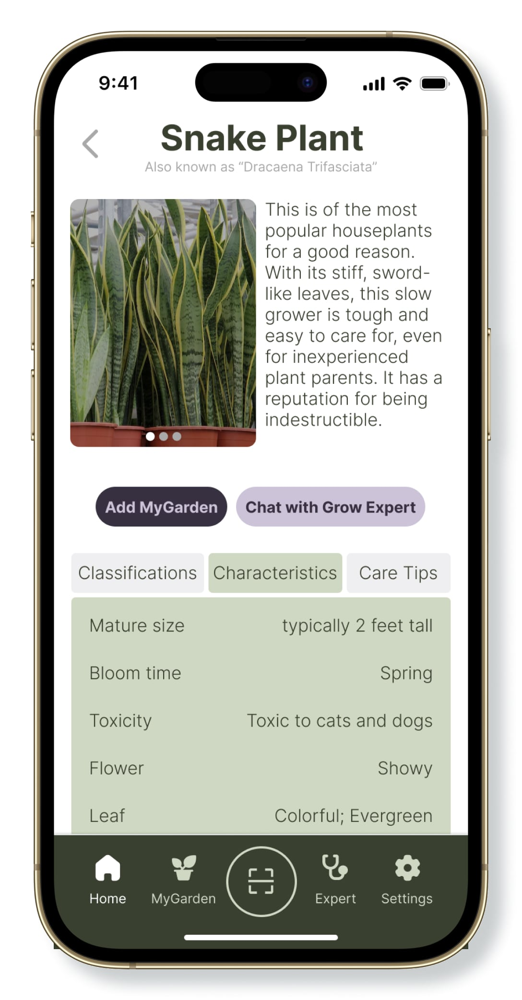
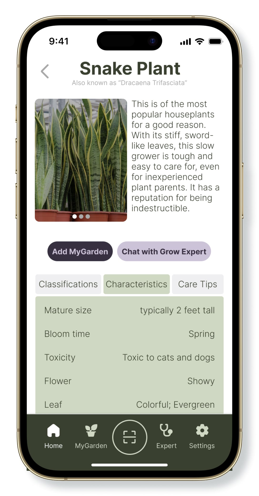
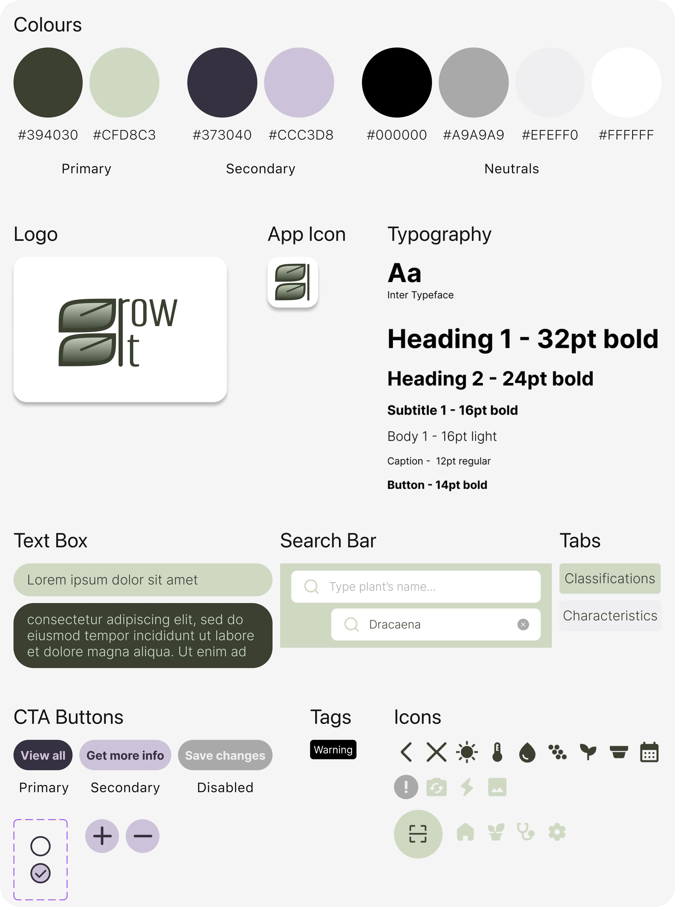
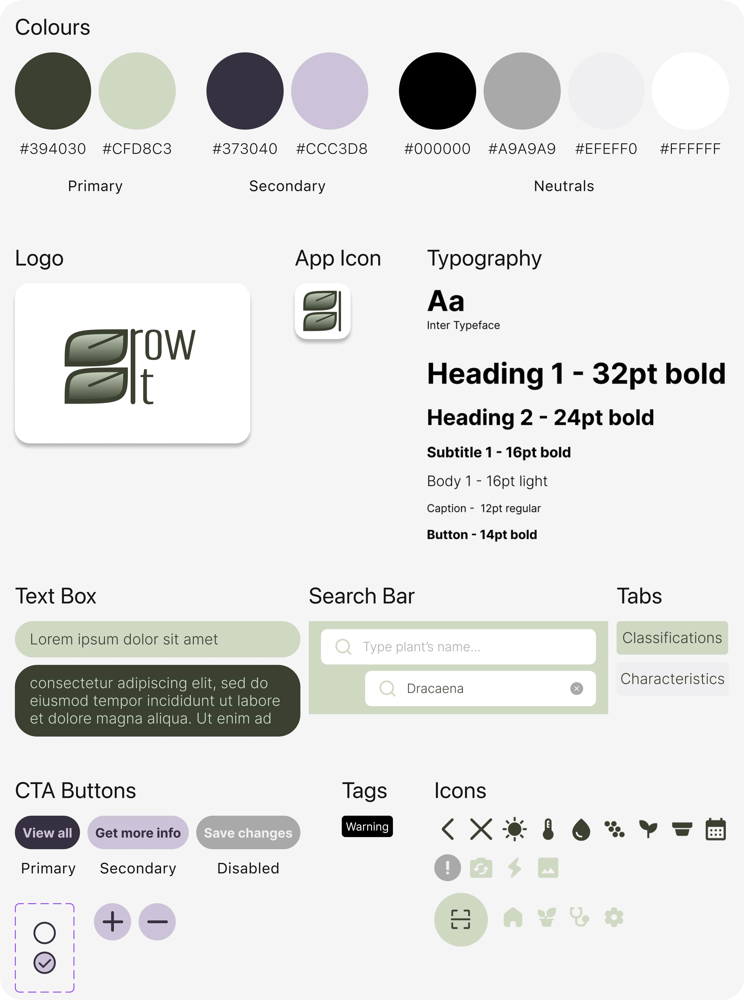

Context
We tend to spend more and more time indoors with each passing year. Covid-19 has accelerated this trend, as the concept of remote work has become increasingly available and accepted.
While there are numerous benefits to working from home, it also presents new challenges, many of which are related to our mental health. One effective way to address this issue is by incorporating plants into our indoor environments.
Indoor plants are pretty popular: 7 in 10 millennials call themselves a plant parent. Yet the average plant parent has killed seven houseplants. Others often worry they will not be able to keep them alive, preventing them from purchasing one.
- 48% of individuals aged 25-39 are concerned about plant care.
- Despite the increasing popularity of houseplants, many people still refrain from owning one due to uncertainty about proper care.
Main benefits of houseplants
reduce stress levels
boost productivity
improve the quality of indoor air
Goal
Facilitate the care of houseplants to encourage their inclusion in homes.
Problems
- Forgetting to take care of plants due to a lack of proper organisation.
- Lack of easily accessible knowledge for the correct care of plants, including routine care and diseases.
User Needs
- As a user, I want to identify a plant's name, classifications, characteristics, and care tips by taking a photo.
- As a user, I want to organise my plants according to the room they're in.
- As a user, I want to track each plant's growth by recording details such as age, height, pot size, and sun exposure.
- As a user, I want to be told when the time comes to water, fertilise or prune my plants.
- As a user, I want to learn about a plant by searching for its name.
- As a user, I want to report a plant's problem to receive a diagnosis and solution from expert gardeners.
Solutions
Search by name or scan a plant to identify it and easily access info, care tips, and recognise diseases.
Organised 'My Garden' section to easily view all plants.
Plant care reminders.
Garden expert chat.
User Flow

Wireframes & Wireflows

Style-guide
 

User Testing
An observation of the natural interaction of users with the app, followed by an interview, allowed me to identify several points of improvement. The following are the major pain points and the changes I implemented accordingly:
-
In MyGarden it is not clear where I can add a plant / a space
→ Moved the + icon to the top of the screen.


-
Scan for diagnosis is annoying if you have to navigate back for starting over
→ Changed it to a modal that the user can easily navigate or close.


-
Care reminders don't have a clear enough separation between the activities (such as water and fertilise)
→ Created a more clear UI.


Final Design
Home tab includes an easy access to Search, Care Reminders, and discovery articles.
MyGarden enables you to organise your plants in personalised spaces and easily keep track of their care and growth.
Scan features allows you to quickly identify a plant and learn more about it.
A chat with a Grow Expert will help you figure out what's wrong with your plant and set up a treatment plan.
Reflections
- A more thorough user analysis can enable a greater understanding on the emphasis to be put on every feature of the app.
- Possible future steps:
- Conduct extensive user testing of the app in parallel with research on the real-life benefits it provides, and adjust the app accordingly.
- Introduce another section of the app to facilitate purchasing plants, encouraging new users to become plant parents.